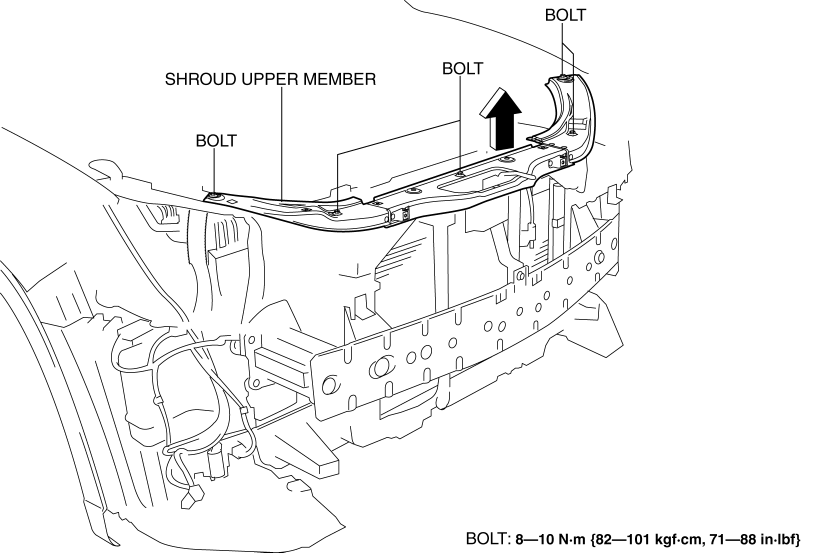

< Previous
Next >
2014 -
Mazda6 -
Body and Accessories
SHROUD UPPER MEMBER REMOVAL/INSTALLATION
1. Disconnect the negative battery cable. (See NEGATIVE BATTERY CABLE DISCONNECTION/CONNECTION [SKYACTIV-G 2.5].)
2. Remove the following parts: a. Set plate (See SET PLATE REMOVAL/INSTALLATION.)
b. Front bumper (See FRONT BUMPER REMOVAL/INSTALLATION.)
c. Front combination light (See FRONT COMBINATION LIGHT REMOVAL/INSTALLATION.)
d. Horn (See HORN REMOVAL/INSTALLATION.)
3. Remove bolts.

4. Remove the shroud upper member in the direction of the arrow shown in the figure.
5. Install in the reverse order of removal.
6. Adjust the headlight aiming. (See HEADLIGHT AIMING.)
7. Adjust the front fog light aiming. (with front fog lights) (See FRONT FOG LIGHT AIMING.)
< Previous
Next >
© 2012 Mazda North American Operations, U.S.A.